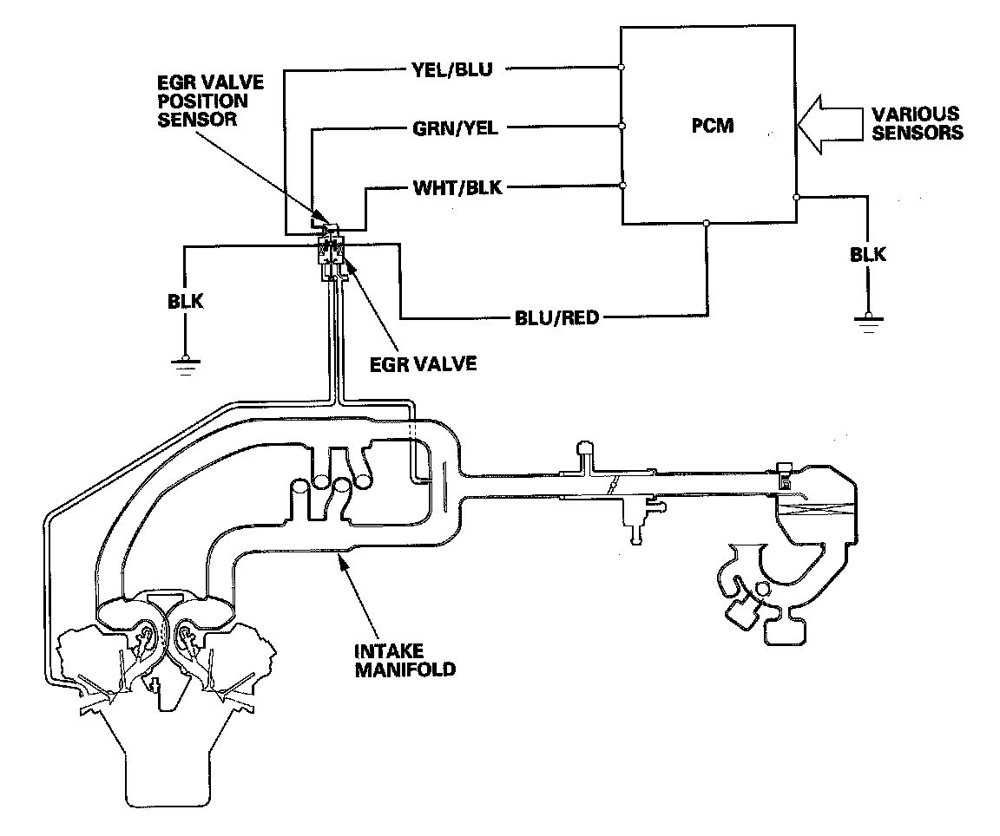

Exhaust Gas Recirculation: Description and Operation
Exhaust Gas Recirculation (EGR) SystemRefer to the system diagram to see a functional layout of the system.
EGR Valve
The EGR valve lowers peak combustion temperatures and reduces oxides of nitrogen emissions (NOx) by recirculating exhaust gas through the intake manifold and into the combustion chambers.

Exhaust Gas Recirculation (EGR) System Diagram
The EGR system reduces oxides of nitrogen (NOx) emissions by recirculating exhaust gas through the EGR valve and the intake manifold into the combustion chambers. The PCM memory contains the ideal EGR valve position for various operating conditions.
The EGR valve position sensor detects the amount of EGR valve lift, and sends it to the PCM. The PCM then compares it with the ideal lift in its memory (based on signals sent from other sensors). If there is any difference between the two, the PCM cuts current to the EGR valve.